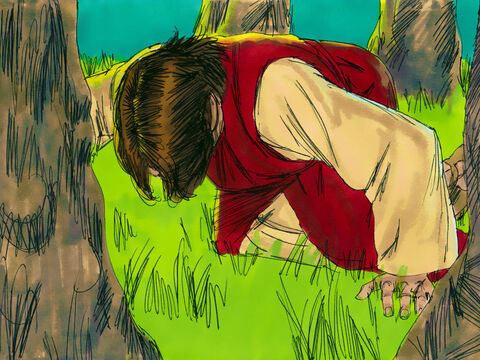
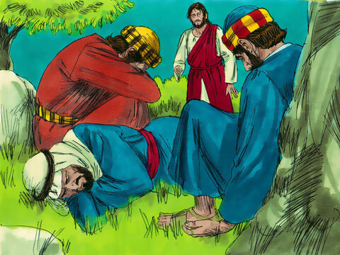

Lord Jesus Prays In Gethsemane
Then cometh Jesus with them unto a place called Gethsemane, and saith unto the disciples, Sit ye here, while I go and pray yonder.
And he took with him Peter and the two sons of Zebedee, and began to be sorrowful and very heavy.
Then saith he unto them, My soul is exceeding sorrowful, even unto death: tarry ye here, and watch with me.
And he went a little farther, and fell on his face, and prayed, saying, O my Father, if it be possible, let this cup pass from me: nevertheless not as I will, but as thou wilt.
And he cometh unto the disciples, and findeth them asleep, and saith unto Peter, What, could ye not watch with me one hour?
Watch and pray, that ye enter not into temptation: the spirit indeed is willing, but the flesh is weak.
He went away again the second time, and prayed, saying, O my Father, if this cup may not pass away from me, except I drink it, thy will be done.
And he came and found them asleep again: for their eyes were heavy.
And he left them, and went away again, and prayed the third time, saying the same words.
Then cometh he to his disciples, and saith unto them, Sleep on now, and take your rest: behold, the hour is at hand, and the Son of man is betrayed into the hands of sinners.
Rise, let us be going: behold, he is at hand that doth betray me.
Matthew 26:36-46
- 
- 